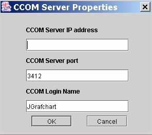
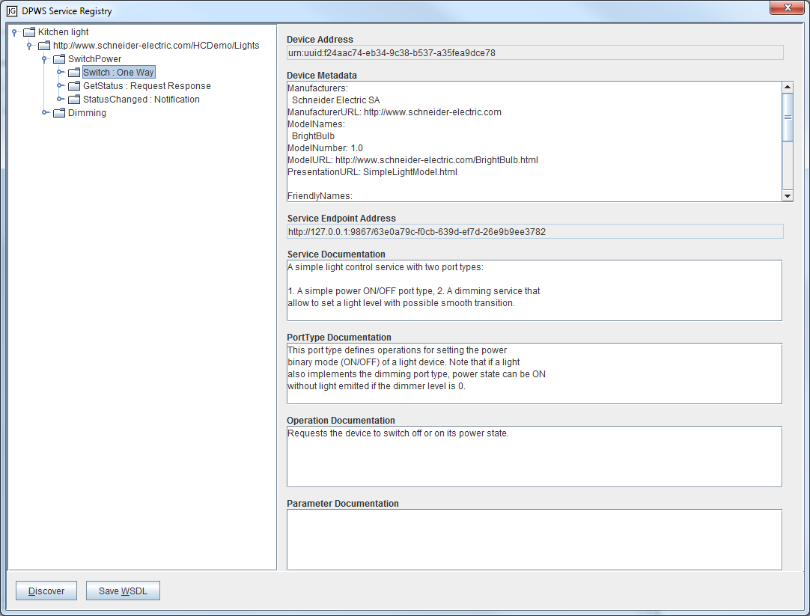

Connects to the xmlBlaster server.
Disconnects from the xmlBlaster server.
Open the CCOM server properties dialog.

CCOM Server IP address The IP address of the xmlBlaster server. (Default: 127.0.0.1)
CCOM Server Port The port of the xmlBlaster server. (Default: 3412)
CCOM Login Name The login name to xmlBlaster. (Default: JGrafchart)
Change the editor into slide show mode.
Change the editor into its normal mode.
Open the DPWS Services dialog showing all currently available services.
JGrafchart uses WS-Discovery to find devices automatically. Use command line argument --dpwsDiscovery to select which network interface or IPv4 address that is used for WS-Discovery.
A list of all currently available services is updated automatically when devices send Hello and Bye WS-Discovery messages, and a discovery (Probe) is performed when JGrafchart is started. Under ordinary circumstances, using the Discover button is not required, but it might be useful e.g. if messages have been lost, if a DPWS device has crashed, or to get verbose discovery printouts.

All available services are listed in a tree. When a tree node is selected the corresponding documentation is shown.
Device Address The unique and persistent address for the device hosting the service.
Device Metadata Various device metadata.
Service Endpoint Address Current address for accessing the service.
Documentation The content of the wsdl:documentation elements specified in the WSDL file below:Discover Discard the current list of available DPWS services and perform a DPWS discovery to find all running services. To get verbose discovery printouts, hold the Shift key when clicking the button.
Save WSDL Save the WSDL file related to the currently selected tree node.